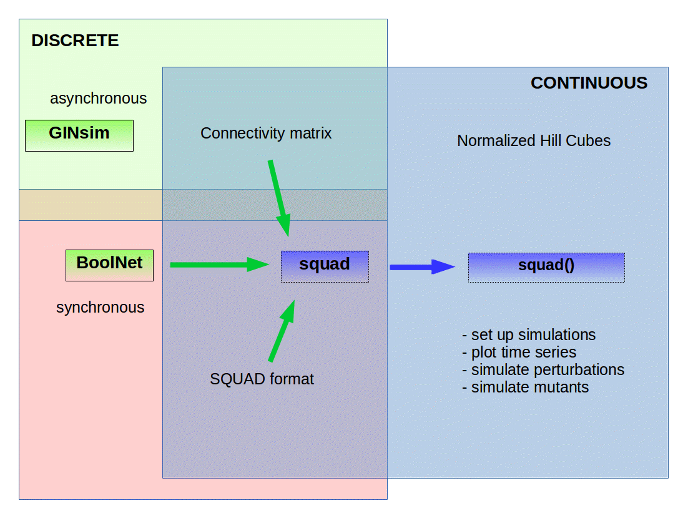

During the definition of a regulatory network model it is frequently convenient to start with simple formalisms and then to transit to more refined models. Continuous interpolations of Boolean Regulatory Networks (BRN) are defined so as to preserve dynamical characteristics of discrete model but extending the range of values of the variables. The main goal of SQUAD is to provide a flexible tool to automate the transformation of discrete BRN models to continuous systems.
Here, we present the main features of the SQUAD R package which is a useful tool to define, set up, and run simulations using continuous interpolations of BRN models. It can also perform stationary states search.
The figure shows schematically the main features of the SQUAD R package. SQUAD extends the functionality of the BoolNet R package (represented as a pink box). BoolNet has integrated an optimized method to find synchronous stable states by using the Dubrova algorithm. By the other hand, in an asynchronous context SQUAD performs an optimized heuristic method using BDD representations and model checking by calling GINsim (green box). Hence, the modeller can start defining a discrete BRN model and choose synchronous or asynchronous efficient methods for stationary states search.
If needed, the modeler can transit to more refined continuous methods such as squad or normalized Hill Cubes interpolations of BRN models. Hence, SQUAD serves as a link between discrete Boolean formalism to such continuous interpolations (blue box).